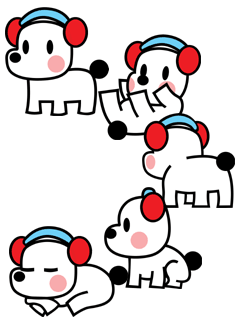
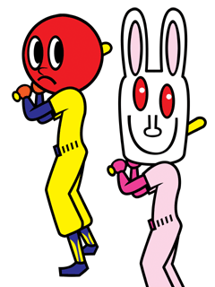
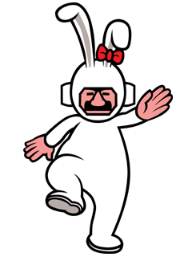
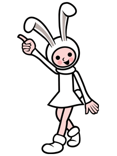
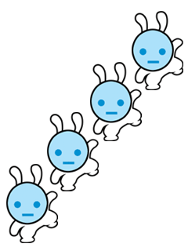
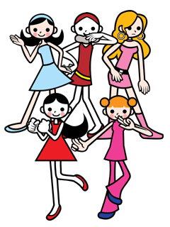
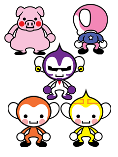
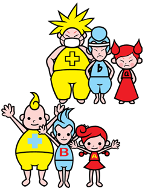
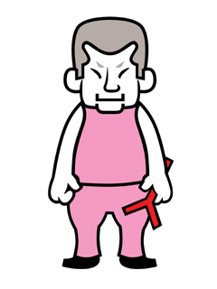

 |
リズム天国のいたるところで目にするイヌ。
ヘッドフォンを耳にかけていて常にノリノリだ。
見かけよりも年齢は上で、話し方にも奥深さがある。
いつもどこかでプレイヤーを見守っているらしい… |
エアーバッターの特殊な姿。
なぜ彼がこのようなかぶりものをしているのかは不明。
インタビュアーが必死に問いただしても
答えは返ってこなかったそうだ。
きっとたいした理由もないのだろう。 |
 |
 |
隊長の特殊な姿。
隊員にはヒミツのようだが、
どうも先日バレてしまったらしい。
何か重大な任務のために
このような姿をしているらしいのだが、
隊長は多くを語らない。
|
隊長たちの特殊任務のトレーナーとして選任された、
宇宙でも名の知れたダンサーだ。
初めて隊長たちのダンスを見たときには
ガクゼンとした彼女だが、隊長たちの真剣さに感動し
一生懸命ダンスの指導をしている。
|
 |
 |
宇宙で生活をしているウサギらしい。
隊長となんらかのコンタクトがあるらしいが、
詳細はトップシークレットのようで、全く不明だ。 |
タップダンズで登場する女の子。
とってもオシャレで、いろんな服装で登場する。
あなたのお気に入りは、どれかな？
|
 |
 |
女の子の影響をうけて、
おさるさんもオシャレにイメージチェンジ！
あれ？
ブタさんも登場？ |

トスボーイズの３人も髪型をかえたりして、
ファッションを楽しんでる様子。
あれ？ ツッパリ！？
なにがあったの～！？
|
 |
 |
愛し合うふたりの仲を裂こうとするわるもの。
パチンコを常備するおそろしいやつ。
|
|